ROS2 기초 5차시 - Topic, Service, Action¶
ROS2 패키지 설명
ROS2 패키지 설명
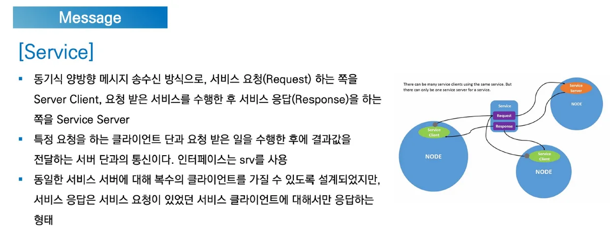
ROS2 패키지 설명
ROS2 패키지 설명
ROS2 실습 Terminal Turtlesim 1단계 1개 (Default Namespace) 1개 (Default Namespace) 2단계 1개 (Namespace 지정) 1개 (Namespace 지정) 3단계 1개 2개 4단계 2개 1개씩 5단계 2개 2개씩
ROS2 실습- turtlesim 1단계 Turtlesim 실행후node 확인
ROS2 실습 ROKEY GO!
ROS2 실습- turtlesim Turtlesim 실행후node 확인
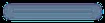
ROS2 실습 Turtlesim 실행후node 확인 Namespace 설정
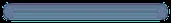
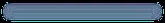
ROS2 실습 Turtlesim 실행후node 확인 Namespace + Node 이름 설정
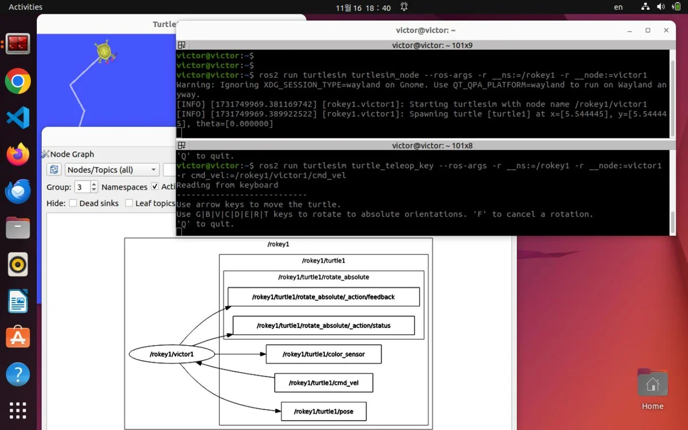
ROS2 실습 Turtlesim 실행후node 확인 Namespace + Node 이름 설정
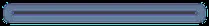
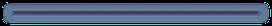
ROS2 실습
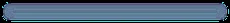
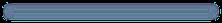
ROS2 실습
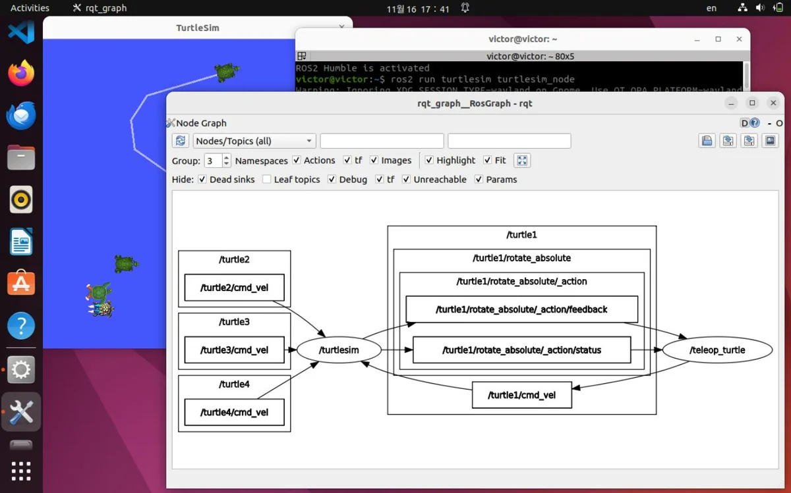
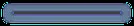
ROS2 실습 Namespace와Name 설정
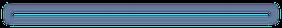
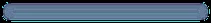
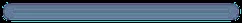
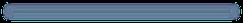
ROS2 실습
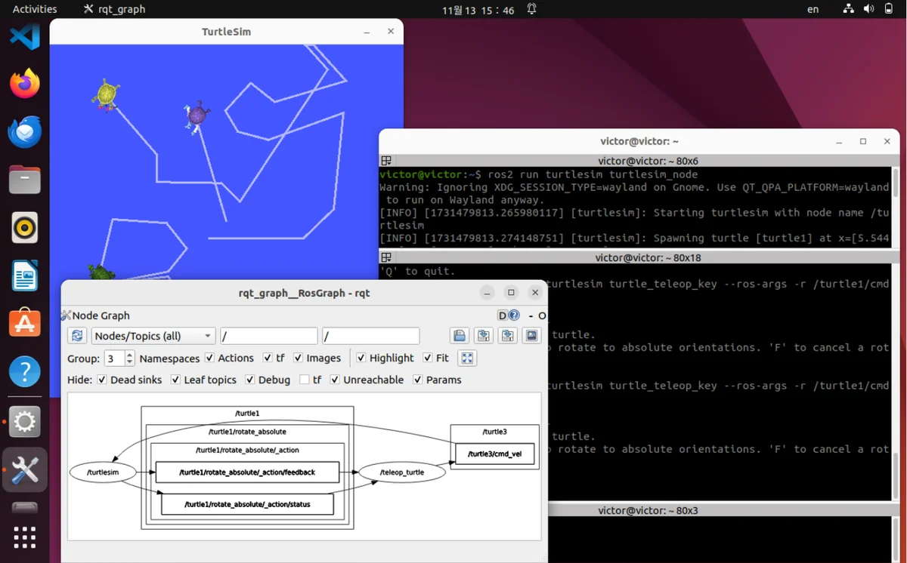
ROS2 실습
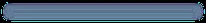
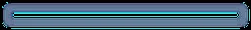
ROS2 실습 1st Namespace와Name각각 설정
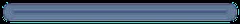
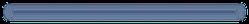
ROS2 실습 2nd Namespace와Name 각각 설정
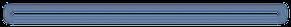
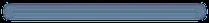
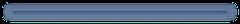
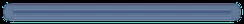
ROS2 실습
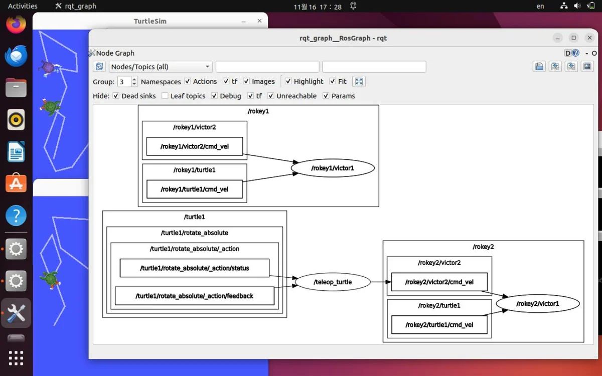
ROS2 실습– 노드와 메시지 통신(10장) 노드(node)
- 아래 그림처럼Node A, Node B, Node C 각각의 노드들은 서로 유기적으로Message로연결
- 수행하고자하는 태스크가 많아질수록 메시지로 연결되는 노드가 늘어나며 시스템이 확장
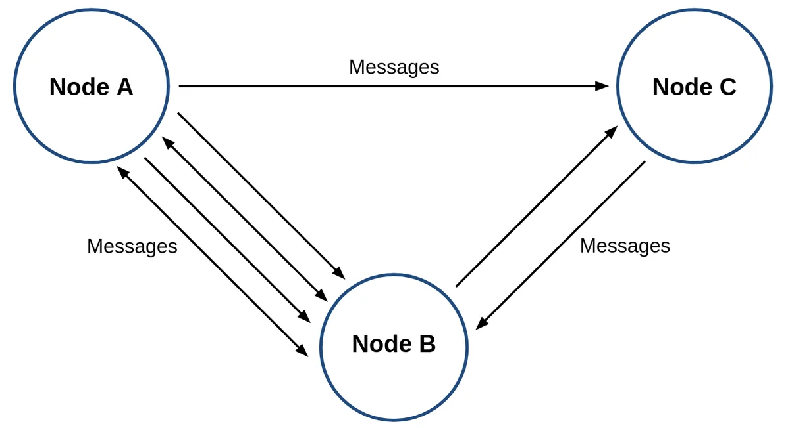
ROS2 실습– 노드와 메시지 통신(10장) 토픽(topic)
- 아래 그림의
Node A – Node B,Node A – Node C처럼 비동기식 단방향 메시지 송수신 방식 - msg 메시지 형태의 메시지를 발간하는Publisher
- 메시지를 구독하는Subscriber 간의 통신
- 이는1:N, N:1, N:N 통신도 가능
- ROS 메시지 통신에서 가장 널리 사용되는 통신 방법이다.
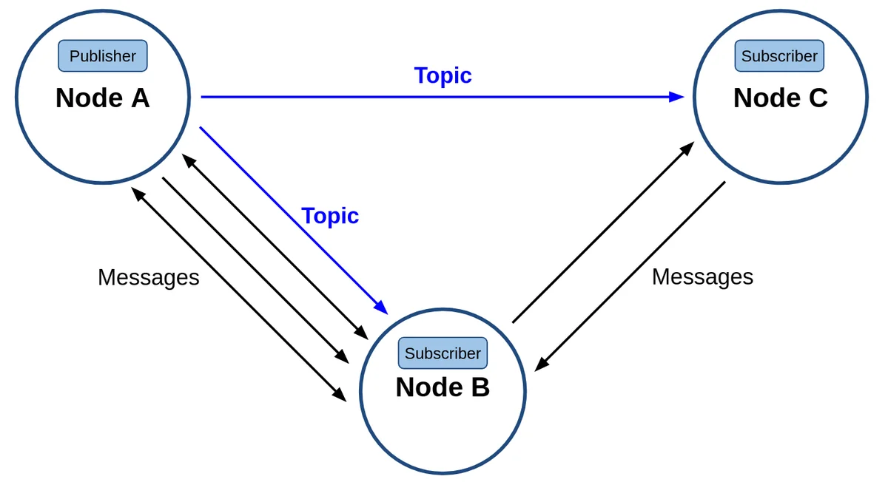
ROS2 실습– 노드와 메시지 통신(10장) 서비스(Service)
- 아래 그림의
Node B - Node C처럼 동기식 양방향 메시지 송수신 방식 - 서비스의 요청(Request)을 하는 쪽은Service client
- 서비스의 응답(Response)을 하는 쪽을Service server
- 특정 요청을 하는 클라이언트 단과 요청받은 일 수행 후 결과 값을 전달하는 서버 단과의 통신
- 서비스 요청 및 응답(Request/Response) 또한 위에서 언급한msg 메시지의 변형으로srv 메시지라고 함.
ROS2 실습– 노드와 메시지 통신(10장) 액션(Action)
- 토픽(topic)과 서비스(service)의혼합
- 액션 목표 및 액션 결과를 전달하는 방식은 서비스와 같고,
- 액션 피드백은 토픽과 같은 메시지 전송 방식
- 액션 목표/피드백/결과(Goal/Feedback/Result) 메시지 또한 위에서 언급한msg 메시지의 변형으로action 메시지라고 함.
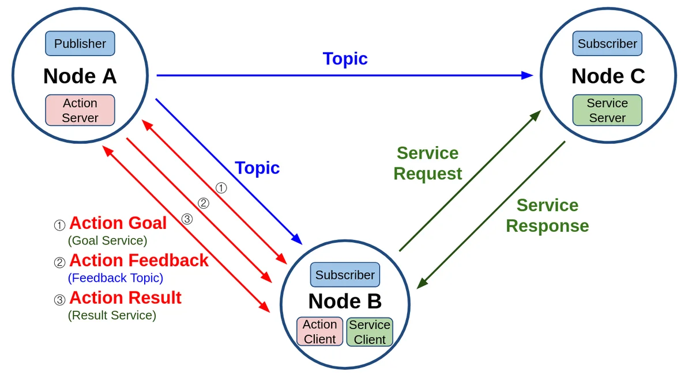
ROS2 실습– 노드와 메시지 통신(10장) 파라미터(Parameter)
- 각 노드에 파라미터 관련Parameter server를 실행시켜 외부의Parameter client 간의 통신으로 파라미터를 변경하는 것으로 서비스와 동일
- 노드 내 매개 변수 또는 글로벌 매개변수를 서비스 메시지 통신 방법을 사용하여 노드 내부 또는 외부에서 쉽게 지정(Set) 하거나 변경할 수 있고, 쉽게 가져(Get)와서 사용할 수 있게하는 점에서 목적이 다름
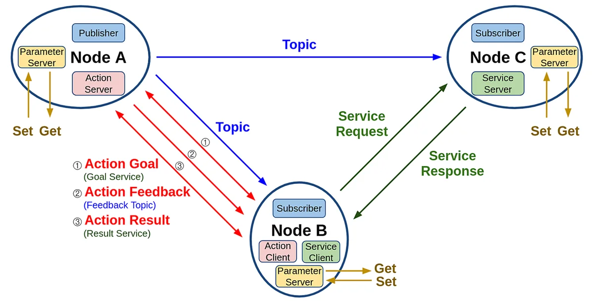
ROS2 실습– 노드와 메시지 통신(10장) $ ros2 node list /turtlesim /teleop_turtle $ ros2 topic list /parameter_events /rosout /turtle1/cmd_vel /turtle1/color_sensor /turtle1/pose $ ros2 action list /turtle1/rotate_absolute $ ros2 node info /turtlesim /turtlesim Subscribers: …… $ ros2 node info /teleop_turtle /turtlesim Subscribers: … $ ros2 service list /clear /kill /reset /spawn /teleop_turtle/describe_parameters /teleop_turtle/get_parameter_types /teleop_turtle/get_parameters /teleop_turtle/list_parameters /teleop_turtle/set_parameters /teleop_turtle/set_parameters_atomically /turtle1/set_pen /turtle1/teleport_absolute /turtle1/teleport_relative /turtlesim/describe_parameters /turtlesim/get_parameter_types /turtlesim/get_parameters /turtlesim/list_parameters /turtlesim/set_parameters /turtlesim/set_parameters_atomically
ROS2 실습- ROS2 Topic(11장)
Node A처럼 하나의 이상의 토픽을 발행Publisher기능과 동시에 토픽(예: Topic D)을 구독하는Subscriber역할도 동시에 수행- 자신이 발행한 토픽을 셀프 구독할 수 있게 구성할 수도 있음
- 토픽 기능은 목적에 따라 다양한 방법으로 사용할 수 있으며 이런 유연성으로 다양한 곳에 사용 중
- ROS 프로그래밍 시에70% 이상이 토픽으로 사용됨
- 통신 방식 중에 가장 기본이 되며 가장 널리 쓰이는 방법
- 비동기성과 연속성을 가지기에 센서값 전송 및 항시 정보를 주고받아야하는 부분에 주로 사용
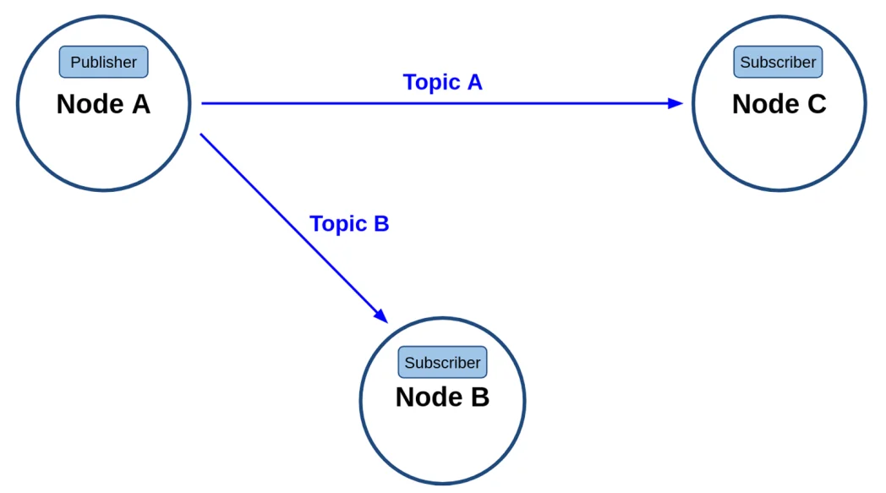
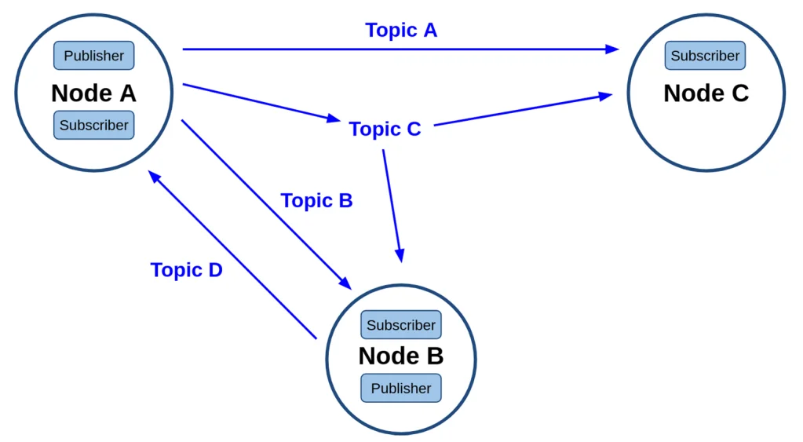
ROS2 실습- Topic $ ros2 topic list -t /parameter_events [rcl_interfaces/msg/ParameterEvent] /rosout [rcl_interfaces/msg/Log] /turtle1/cmd_vel [geometry_msgs/msg/Twist] /turtle1/color_sensor [turtlesim/msg/Color] /turtle1/pose [turtlesim/msg/Pose]
ROS2 실습- Topic $ ros2 topic info /turtle1/cmd_vel Type: geometry_msgs/msg/Twist Publisher count: 1 Subscriber count: 1 $ ros2 topic echo /turtle1/cmd_vel linear: x: 1.0 y: 0.0 z: 0.0 angular: x: 0.0 y: 0.0 z: 0.0
ROS2 실습– Topic $ ros2 topic pub --once /turtle1/cmd_vel geometry_msgs/msg/Twist "{linear: {x: 2.0, y: 0.0, z: 0.0}, angular: {x: 0.0, y: 0.0, z: 1.8}}"
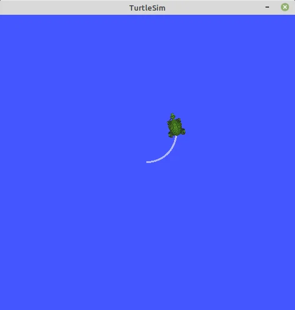
ROS2 실습- Topic $ ros2 topic pub --rate 1 /turtle1/cmd_vel geometry_msgs/msg/Twist "{linear: {x: 2.0, y: 0.0, z: 0.0}, angular: {x: 0.0, y: 0.0, z: 1.8}}"
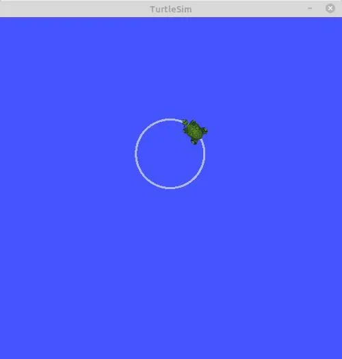
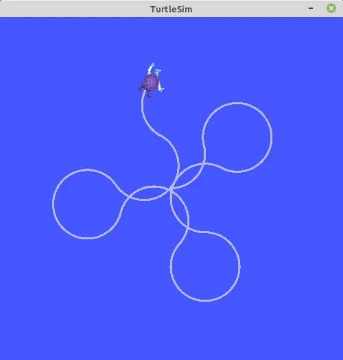
ROS2 실습- Topic Turtlesim 실행후topic 발행해 보기
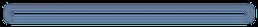
ROS2 실습– Topic with RQT Plugins → Visualization → Plot RQT 실행후pose/x, pose/y 확인
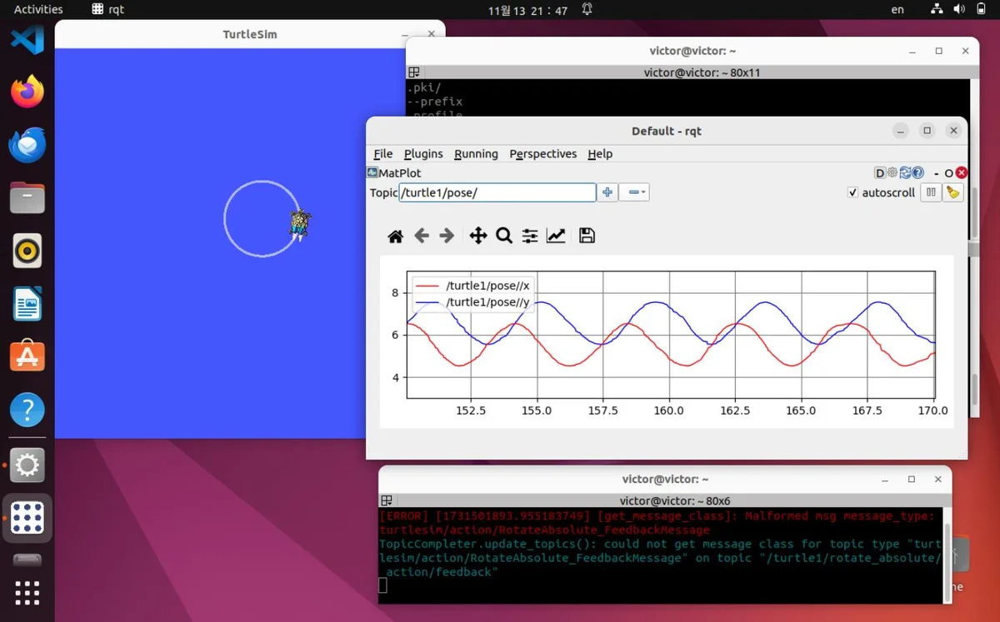
ROS2 실습– Topic Message with RQT Plugins → Topics → Message Publisher
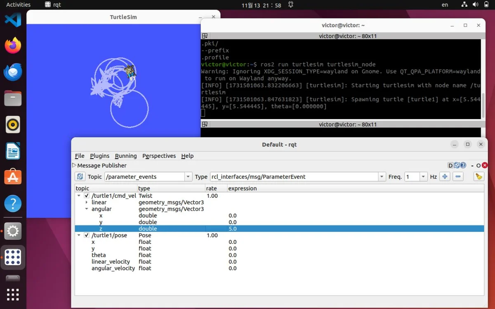
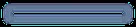
ROS2 실습– ros bag
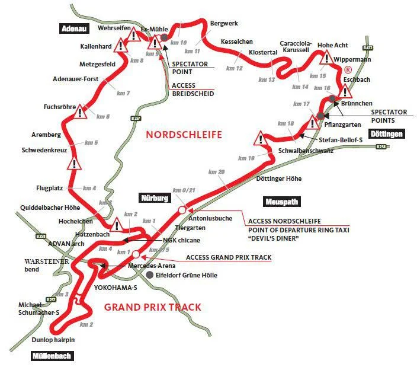
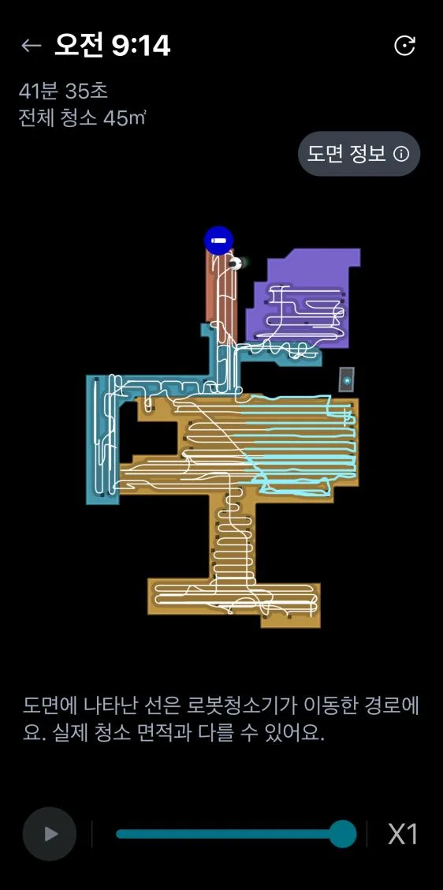
ROS2 실습– ros2 bag and ros2 play
ROS2 실습– ros2 bag and ros2 play
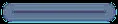
ROS2 실습- Service
- 서비스는 다음 그림과 같이 동일 서비스에 대해 복수의 클라이언트를 가질 수 있도록 설계되었다.
- 단, 서비스 응답은 서비스 요청이 있었던 서비스 클라이언트에 대해서만 응답을 하는 형태
- Node C의Service Client가Node B의Service Server에게 서비스 요청을 하였다면Node B의 Service Server는 요청 받은 서비스를 수행한 후Node C의Service Client에게만 서비스 응답
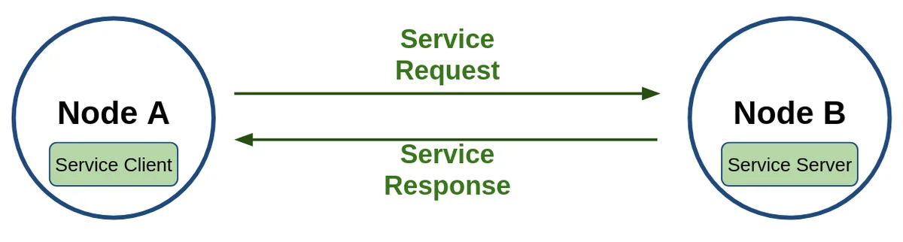
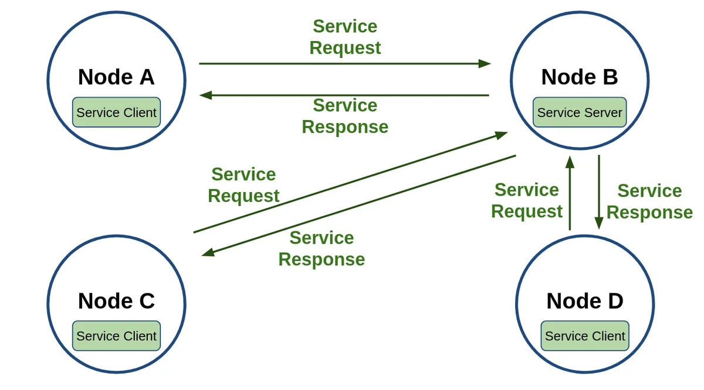
ROS2 실습- Service $ ros2 service list /clear /kill /reset /spawn /turtle1/set_pen /turtle1/teleport_absolute /turtle1/teleport_relative /turtlesim/describe_parameters /turtlesim/get_parameter_types /turtlesim/get_parameters /turtlesim/list_parameters /turtlesim/set_parameters /turtlesim/set_parameters_atomically $ ros2 run turtlesim turtlesim_node
ROS2 실습- Service $ ros2 service list -t /clear [std_srvs/srv/Empty] /kill [turtlesim/srv/Kill] /reset [std_srvs/srv/Empty] /spawn [turtlesim/srv/Spawn] /turtle1/set_pen [turtlesim/srv/SetPen] /turtle1/teleport_absolute [turtlesim/srv/TeleportAbsolute] /turtle1/teleport_relative [turtlesim/srv/TeleportRelative] (생략) $ ros2 service type /clear std_srvs/srv/Empty $ ros2 service type /kill turtlesim/srv/Kill $ ros2 service type /spawn turtlesim/srv/Spawn $ ros2 service find std_srvs/srv/Empty /clear /reset $ ros2 service find turtlesim/srv/Kill /kill
ROS2 실습- Service $ ros2 service call /clear std_srvs/srv/Empty requester: making request: std_srvs.srv.Empty_Request() response: std_srvs.srv.Empty_Response() $ ros2 run turtlesim turtle_teleop_key
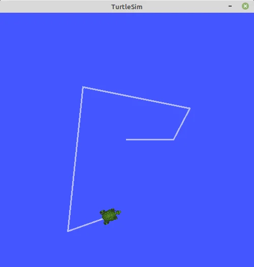
ROS2 실습- Service $ ros2 service call /reset std_srvs/srv/Empty requester: making request: std_srvs.srv.Empty_Request() response: std_srvs.srv.Empty_Response() $ ros2 service call /kill turtlesim/srv/Kill "name: 'turtle1'" requester: making request: turtlesim.srv.Kill_Request(name='turtle1') response: turtlesim.srv.Kill_Response()
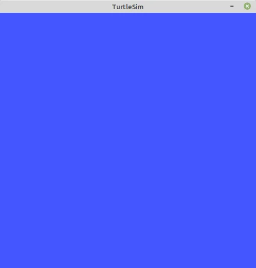
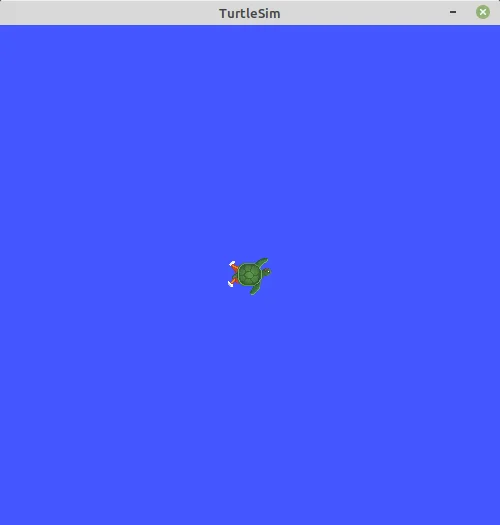
ROS2 실습- Service $ ros2 service call /turtle1/set_pen turtlesim/srv/SetPen "{r: 255, g: 255, b: 255, width: 10}" requester: making request: turtlesim.srv.SetPen_Request(r=255, g=255, b=255, width=10, off=0) response: turtlesim.srv.SetPen_Response()
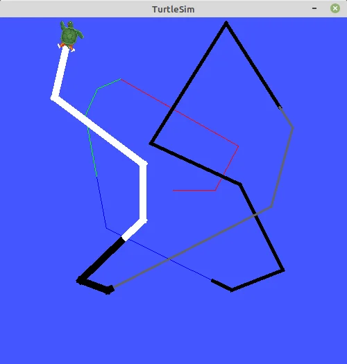
ROS2 실습- Service Turtle 친구4명 생성해 보기 교재 : p148
ROS2 실습– Service with RQT
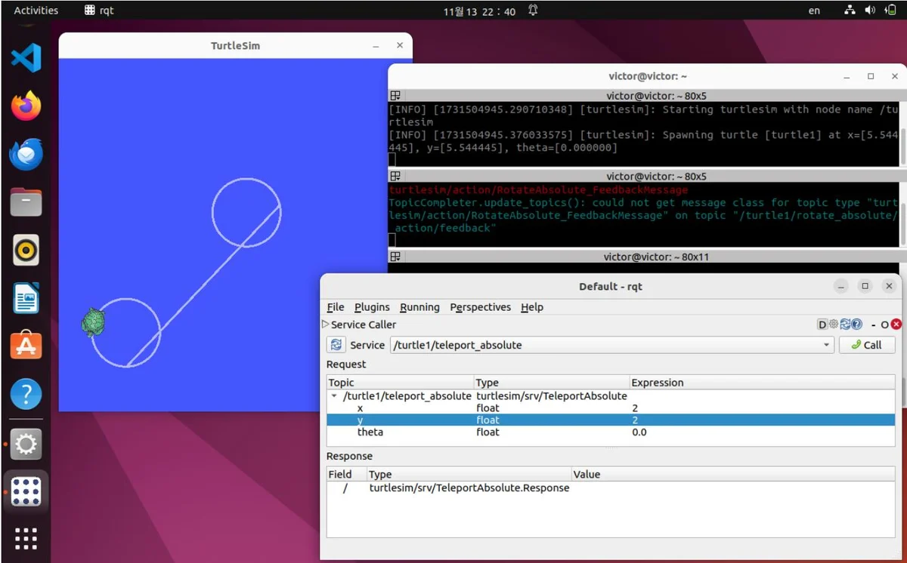
ROS2 실습- Action 액션(Action)
- 토픽(topic)과 서비스(service)의혼합
- 액션 목표 및 액션 결과를 전달하는 방식은 서비스와 같고,
- 액션 피드백은 토픽과 같은 메시지 전송 방식
- 액션 목표/피드백/결과(Goal/Feedback/Result) 메시지 또한 위에서 언급한msg 메시지의 변형으로action 메시지라고 함.
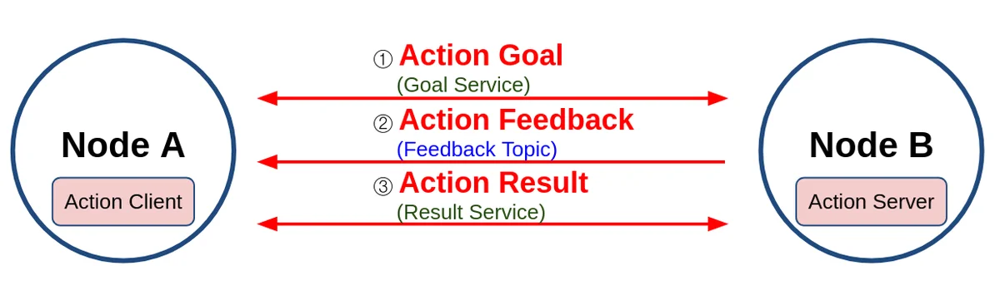
ROS2 실습- Action 액션의 구현 방식을 더 자세히 살펴보면 다음 그림과 같이 토픽과 서비스의 혼합이라고 볼 수 있는데ROS 1이 토픽만을 사용하였다면ROS 2에서는 액션 목표, 액션 결과, 액션 피드백은 토픽과 서비스가 혼합되어 있다. 즉, 다음 그림과 같이Action Client는Service Client 3개와Topic Subscriber 2개로 구성되어 있으며, Action Server는 Service Server 3개와Topic Publisher 2개로 구성된다. 액션 목표/피드백/결과(goal/feedback/result) 데이터는msg 및 srv 인터페이스의 변형으로action 인터페이스라고 한다.
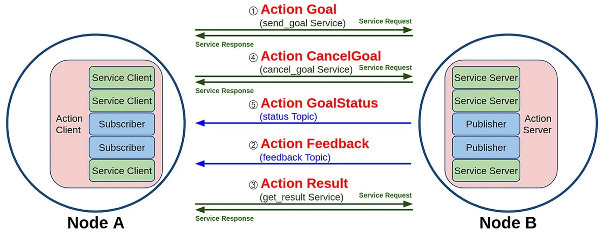
ROS2 실습- Action ROS 1에서의 액션은 목표, 피드백, 결과 값을 토픽으로만 주고받았는데ROS 2에서는 토픽과 서비스 방식을 혼합하여 사용하였다. 그 이유로 토픽으로만 액션을 구성하였을 때 토픽의 특징인 비동기식 방식을 사용하게 되어ROS 2 액션에서 새롭게 선보이는 목표 전달(send_goal), 목표 취소(cancel_goal), 결과 받기(get_result)를 동기식 인 서비스를 사용하기 위해서이다. 이런 비동기 방식을 이용하다 보면 원하는 타이밍에 적절한 액션을 수행하기 어려운데 이를 원활히 구현하기 위하여 목표 상태(goal_state)라 는 것이 ROS 2에서 새롭게 선보였다. 목표 상태는 목표 값을 전달한 후의 상태 머신을 구동하여 액션의 프 로스 세를 쫒는 것이다. 여기서 말하는 상태 머신은Goal State Machine으로 다음 그림과 같이 액션 목표 전달 이후의 액션의 상태 값을 액션 클라이언트에게 전달할 수 있어서 비동기, 동기 방식이 혼재된 액션의 처리를 원활하게할 수 있게 되어 있다.
ROS2 실습- Action 교재p153
ROS2 실습- Action 60◦ r Degree vs Radian 57◦ r < r = 180◦ = = 3.14 360◦ = 2 = 6.28 1 rad ≒ 180◦/ 3.14 ≒ 57◦ Ros2에서 사용하는 단위
- Kg
- Sec
- Meter
- Radian r ROS2 실습- Action
ROS2 실습- Action
ROS2 실습- Action

ROS2 실습- Interface ROS의노드 간에 데이터를 주고받을 때에는 토픽, 서비스, 액션이 사용되는데 이 때 사용되는 데이터의 형태를ROS 인터페이스(interface) 이라고 한다. ROS 인터페이스에는ROS 2에 새롭게 추가된IDL(interface definition language)과ROS 1부터ROS 2까지 널리 사용 중인msg, srv, action 이 있다. 토픽, 서비스, 액션은 각각msg, srv, action interface를 사용하고 있으며 정수, 부동소수점, 불리 언과 같은 단순 자료형을 기본으로 하여 메시지 안에 메시지를 품고 있는 간단한 데이터 구조 및 메시지들이 나열된 배열과 같은 구조도 사용할 수 있다. [단순 자료형]
- 예) 정수(integer), 부동소수점(floating point), 불(boolean)
-
https://github.com/ros2/common_interfaces/tree/humble/std_msgs [메시지 안에 메시지를 품고 있는 간단한 데이터 구조]
-
예) geometry_msgs/msgs/Twist의
Vector3 linear -
https://github.com/ros2/common_interfaces/blob/humble/geometry_msgs/msg/Twist.msg [메시지들이 나열된 배열과 같은 구조]
-
예) sensor_msgs/msgs/LaserScan 의
float32[] ranges - https://github.com/ros2/common_interfaces/blob/humble/sensor_msgs/msg/LaserScan.msg
ROS2 실습- Interface 토픽은 고유의 인터페이스를 가지고 있는데 이를 메시지 인터페이스라 부르며, 파일로는msg 파일을 가르킨다. 예를 들어, 위 예제에서/turtle1/cmd_vel 토픽은geometry_msgs/msgs/Twist 형태이다. 이름이 좀 긴 데 풀어서 설명하면 기하학 관련 메시지를 모아 둔 geometry_msgs 패키지의msgs 분류의Twist 데이터 형태라는 것이다. 토픽은 고유의 인터페이스를 가지고 있는데 이를 메시지 인터페이스라 부르며, 파일로는msg 파일을 가르킨다. 예를 들어, 위 예제에서/turtle1/cmd_vel 토픽은geometry_msgs/msgs/Twist 형태이다. 이름이 좀 긴 데 풀어서 설명하면 기하학 관련 메시지를 모아 둔 geometry_msgs 패키지의msgs 분류의Twist 데이터 형태라는 것이다. Twist 데이터 형태를 자세히 보면Vector3 linear과Vector3 angular 이라고 되어 있다. 이는 메시지 안에 메시지를 품고 있는 것으로Vector3 형태에linear 이라는 이름의 메시지와Vector3 형태에angular 이라는 이름의 메시지, 즉 2개의 메시지가 있다는 것이며Vector3는다시float64 형태에x, y, z 값이 존재한다. 다시 말해geometry_msgs/msgs/Twist 메시지 형태는float64 자료형의 linear.x, linear.y, linear.z, angular.x, angular.y, angular.z 라는 이름의 메시지인 것이다. 이를 통해 병진 속도3개, 회전 속도3개를 표현할 수 있게 된다.
ROS2 실습- Interface 직접 코드로 보는 방법과$ros2 interface show 명령으로 보는 방법 교재p161
ROS2 실습- Interface 교재p161 Message interface, msg
ROS2 실습- Interface Interface
- list → 현재 개발 환경의 모든msg, srv, action 메시지 보여 줌
- package → msg, srv, action 인터페이스를 담고 있는 패키지 목록
- package → 옵션에package명을 입력하면 지정한 패키지에 포함된interface보여줌
- proto → 특정 인터페이스 형태를 입력하면 그 인터페이스의 기본 형태를 보여 줌 Message interface, msg
ROS2 실습- Interface 요청(Request) 응답(Response) 구분 Service interface, srv
ROS2 실습- Interface Action interface, action Action 목표 Action 결과 Action 피드백 구분 구분
ROS2 실습- Interface Node 정보 확인 Action list
ROS2 실습- Parameter 파라미터 관련 기능은RCL(ROS Client Libraries)의 기본 기능으로 다음 그림과 같이 모든 노드가 자신만의Parameter server를 가지고 있고, 그림과 같이 각 노드는Parameter client도 포함시킬 수 있어서 자기 자신의 파라미터 및 다른 노드의 파라미터를 읽고 쓸 수 있게 된다. 이를 활용하면 각 노드의 다양한 매개 변수를 글로벌 매개 변수처럼 사용할 수 있게 되어 추가 프로그래밍이나 컴파일 없이 능동적으로 변화 가능한 프로세스를 만들 수 있게 된다. 그리고 각 파라미터는yaml 파일 형태의 파라미터 설정 파일을 만들어 초기 파라미터 값 설정 및 노드 실행 시에 파라미터 설정 파일을 불러와서 사용할 수 있기에ROS 2 프로그래밍에 매우 유용하게 사용할 수 있다.` YAML(YAML Ain't Markup Language 또는Yet Another Markup Language)은 사람이 읽기 쉬운 데이터 직렬화 형식입니다. 주로 구성 파일, 데이터 전송, 설정 파일 등을 저장하는 데 사용됩니다. YAML은JSON과 유사하지만, 더 간결하고 가독성이 뛰어난 문법을 제공합니다
ROS2 실습– Parameter get & set
ROS2 실습– Parameter get & set
ROS2 실습– Parameter get & set
ROS2 실습– Parameter get & set Turtlesim parameter 변경후yaml 로딩해 보기
ROS2 실습– Parameter get & set Turtlesim parameter 변경후yaml 로딩해 보기
ROS2 실습– RQt(Node Graph)
ROS2 실습– RQt(Topic Monitor) turtlesim_node 실행 teleop_key 실행 rqt 실행 /turtle1/pose와/turtle1/cmd_vel 체크 키보드로 움직이면서value 바뀌는 지 확인
ROS2 실습– RQt(Message Publisher)
ROS2 실습– RQt(Service Caller)
ROS2 실습– RQt(Parameter Reconfigure)
ROS2 실습– RQt(Plot)
ROS2 실습– RQt(image & console)
ROS2 실습– RQt(Image) 영상: cam2image.webm
ROS2 실습– RQt(Console) Turtlesim과teleop_key 실행 cam2image 실행 rqt →Logging →Console에서 확인
ROS2 실습
ROS2 실습- Build :~$ mkdir –p ~/ros2_ws/src
ROS2 실습 :~$ git clone https://github.com/ros/ros_tutorials-git -b humble
ROS2 실습 $colcon build를 하고 나면build install log 등3개의 디렉토리가 생긴다 colcon : Concept of Libraries for Compilers Installation
ROS2 실습
ROS2 실습 import rclpy from rclpy.node import Node from geometry_msgs.msg import Twist import sys import termios import tty
키보드입력을처리하는클래스¶
class TurtleTeleopKey(Node): def init(self): super().init('turtle_teleop_key') self.publisher = self.create_publisher(Twist, '/turtle1/cmd_vel', 10) self.msg = Twist() self.print_instructions() def print_instructions(self): print("Control Your Turtle!") print("Use arrow keys to move: ") print("↑: Forward, ↓: Backward, →: Turn Right, ←: Turn Left") print("Press 'q' to quit.") def get_key(self): fd = sys.stdin.fileno() old_settings = termios.tcgetattr(fd) try: tty.setraw(sys.stdin.fileno()) key = sys.stdin.read(1) finally: termios.tcsetattr(fd, termios.TCSADRAIN, old_settings) return key def run(self): while True: key = self.get_key() if key == 'q': # 종료 break elif key == '\x1b[A': # ↑ self.msg.linear.x = 2.0 self.msg.angular.z = 0.0 elif key == '\x1b[B': # ↓ self.msg.linear.x = -2.0 self.msg.angular.z = 0.0 elif key == '\x1b[C': # → self.msg.linear.x = 0.0 self.msg.angular.z = -2.0 elif key == '\x1b[D': # ← self.msg.linear.x = 0.0 self.msg.angular.z = 2.0 else: self.msg.linear.x = 0.0 self.msg.angular.z = 0.0 self.publisher.publish(self.msg) print("Exiting...") def main(): rclpy.init() node = TurtleTeleopKey() node.run() node.destroy_node() rclpy.shutdown() if name == 'main': main() Turtle_teleop_key.py(for test only)
ROS2 실습 Turtle_teleop_key.cpp
ROS2 실습– package build - my_first_package ※ Package 생성 시 디렉토리→ ros2_ws/src ※ Build 하는 경우working 디렉토리→ ros2_ws
ROS2 실습 1) 전체 패키지를 빌드 할 때 $ cd ~/robot_ws && colcon build --symlink-install $ cd ~/robot_ws && colcon build --symlink-install --packages-select [패키지 이름]
- vcstool (버전 컨트롤 시스템 툴) $ wget https://raw.githubusercontent.com/ros2/ros2/humble/ros2.repos $ vcs import src < ros2.repos $ sudo rosdep init $ rosdep update $ rosdep install --from-paths src -y --ignore-src $ bloom-release --ros-distro humble --track humble awesome_pkg 2) 해당 패키지만 빌드 할 때
- rosdep (의존성 관리 툴)
- bloom (바이너리 패키지 관리 툴)
ROS2 실습 패키지 파일 사용 방법ROS 2 프로그래밍 전에 알아 둬야할 필수 사전 정보 ● 패키지 설정 파일 package.xml(ROS pkg의 필수 구성 요소) ● 빌드 설정 파일 CMakeLists.txt(순수Python pkg는CMakeLists.txt 파일 없음) ● 파이썬 패키지 설정 파일 setup.py(순수한ROS2 Python pkg에만 사용하는 배포를 위한 설정 파일) ● 파이썬 패키지 환경 설정 파일 setup.cfg(순수한ROS2 Python pkg에만 사용하는 배포를 위한 구성 파일) ● RQt 플러그인 설정 파일 plugin.xml(RQT plugin으로pkg를 작성할 때의 필수 구성 요소) ● 패키지 변경 로그 파일 CHANGELOG.rst(pkg업데이트 내역 기술, 개발 이력 추적) ● 라이선스 파일 LICENSE(pkg코드에 사용된 라이센스 기술) ● 패키지 설명 파일 README.md(markdown 파일)
ROS2 실습– 패키지 설정 파일(package.xml)
패키지 설정 파일은ROS 패키지의 필수 구성 요소로서 패키지의 정보를 기술하는 파일
기술하는 내용으로는 패키지 이름, 저작자, 라이선스, 의존성 패키지 등이 있으며,
XML 형식으로 기술하고 파일 명은package.xml을사용
사용되는 빌드 툴, 의존성 패키지들이 모두 기술되기에 빌드 및 패키지 설치, 사용에 있어서 매우 중요한 파일
모든ROS 패키지의 필수 파일로 각 패키지당 무조건1개의 패키지 설정 파일(package.xml)을포함
ROS2 실습– 패키지 설정 파일(package.xml) 항목 내용
문서 문법을 정의하는 문구로 아래의 내용은xml 버전1.0을 따르고 있다는 것을 알린다.
ROS2 실습
URDF 파일pan-tilt 로봇– link - joint 예
ROS2 실습
URDF 파일pan-tilt 로봇– link 상세
ROS2 실습
URDF 파일pan-tilt 로봇– joint 상세